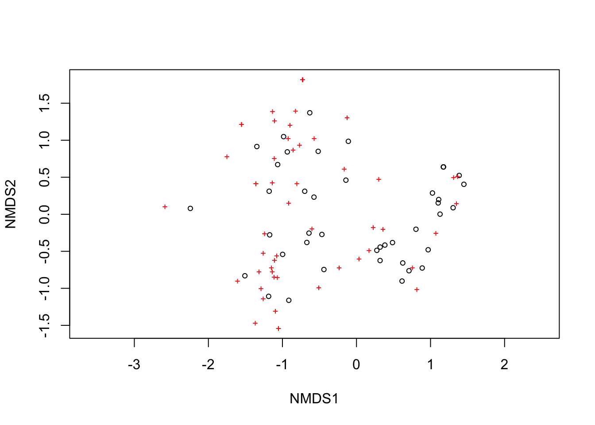
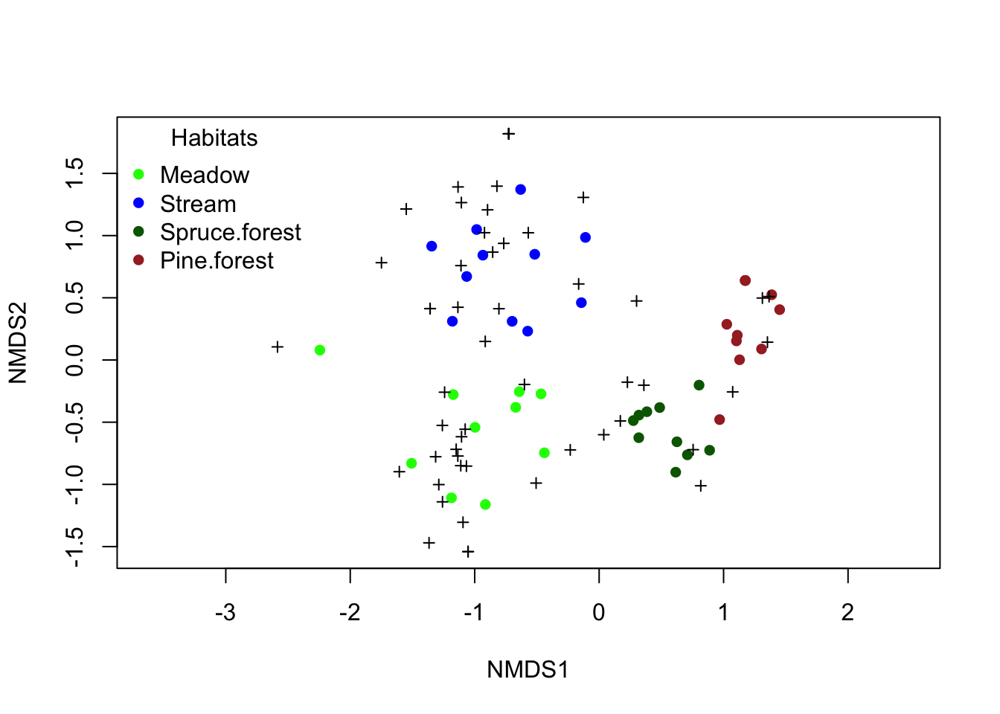
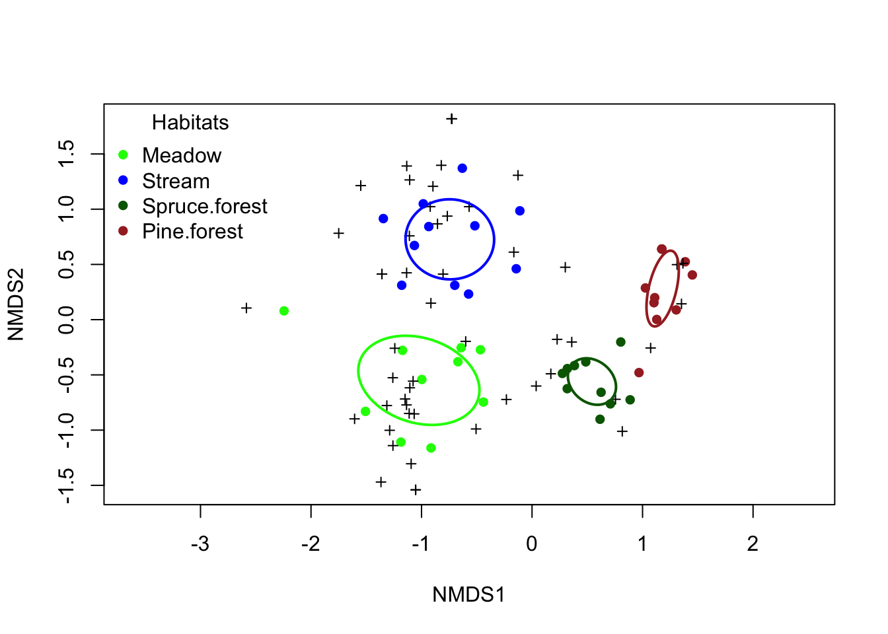
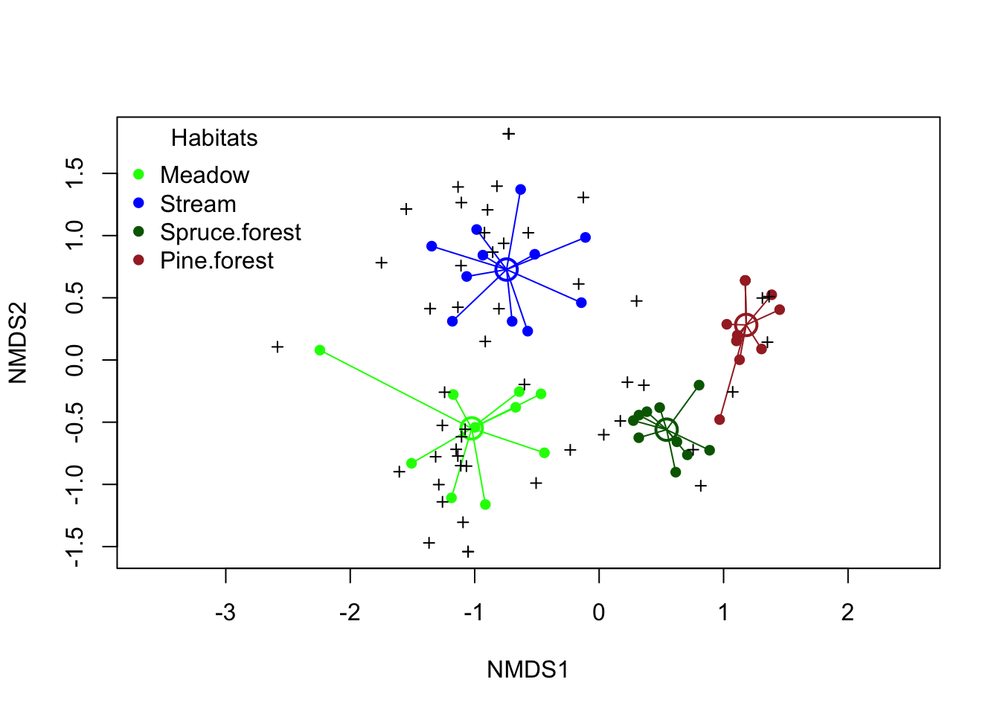
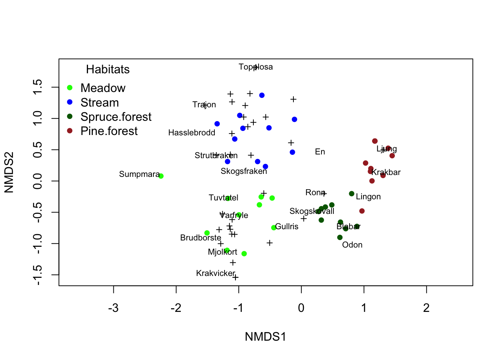
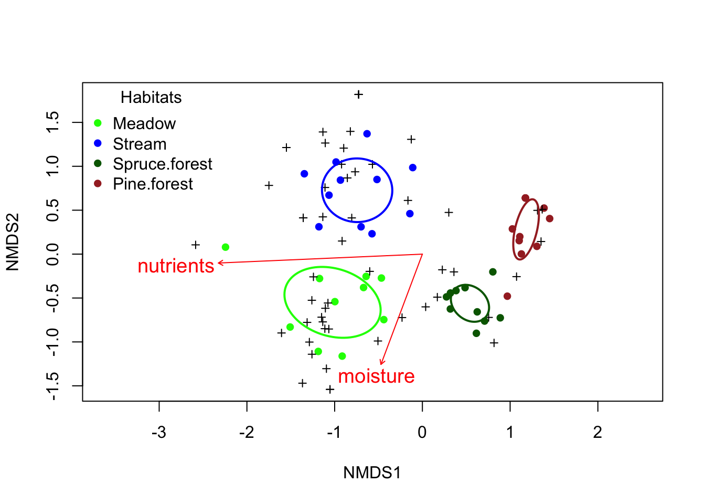

Ordination with NMDS
Up to now, we have always had a single response variable in each analysis — it might be plant height, the number of chicks in a chaffinch nest, or the pH value of lakes. Such models are called univariate, since they only have one dependent variable (response variable) per analysis. But sometimes you might be interested in many response variables at once? Say you have looked at the occurrence of every plant species in two different environments, and found around seventy species. You could test species by species whether abundance differs between the two environments, but that becomes a huge number of univariate tests. Wouldn’t it be better to instead look at whether the plant community as a whole differs between the two environments?
These are exactly the kinds of questions that multivariate methods are useful for. Multivariate methods have more than one dependent variable (response variable), where all response variables are analyzed together in the same analysis.
The most common type of multivariate method used by ecologists is ordination. The method is used in genetics, where one can measure gene expression of tens of thousands of genes and wants to know whether gene expression differs between treatments, but also when one has measured dozens of morphological traits of individuals and wants to see whether they differ in shape. What we will focus on here, however, is how ordination is used in the analysis of biodiversity data. This can be which species you observed during surveys, but a newer research field that also uses similar methods is the analysis of microbiome data and metabarcoding studies with eDNA.
The multivariate ordination analysis
All our previous analyses have had one response variable, which we plotted on the y-axis, and with our predictor on the x-axis we got a graph in two dimensions. But what do we do if we have yet another response variable? Can we have an additional axis? Yes, in principle we can, if we make the graph in three dimensions (a 3D graph). But after that it gets difficult — how do you visualize 4 dimensions? Can you picture it? If we have measured the abundance of 50 species, we get 50 axes — you can’t even imagine what such a graph would look like! What should we do?
This is where ordination comes in. All your data points lie in the multivariate space, which has as many dimensions as you have response variables. But your data is not scattered completely at random in this space. If, for example, you have looked at species occurrence in replicated quadrats in a spruce forest and in a pine forest, the species composition across all your quadrats in the spruce forest will likely resemble each other, and the same applies in the pine forest. What the multivariate analysis does is try to reduce your multivariate data so that it can be illustrated in two dimensions. It first searches for the straight line through your multivariate space that explains the most variation in your dataset, and that becomes your first axis. It then finds a line that is perpendicular to your first axis and that explains the most of the remaining variation in your data. That becomes your second axis. Now we have two axes, and we can make a figure in two dimensions. Note that these axes do not correspond to any of the axes (dimensions) you fed into your analysis — instead they correspond to combinations of your original axes.
Illustrating an ordination
The figure below shows multivariate data in 3 dimensions (think of three species called X, Y and Z), where each dot corresponds to a quadrat with a certain number of individuals of species X, Y and Z.
You can rotate the graph with your mouse. Rotate it until you see the dimension with the most variation — that should be your first axis.
Then click “Add Axis 1” — that is the first axis of your ordination, which explains the most variation.
Then add Axis 2 with the corresponding button — this is an axis that is perpendicular to axis 1 and explains the second-most variation.
Rotate the figure so that Axis 1 and Axis 2 form a flat cross facing you (roughly as if you had placed the cross on a floor and were looking straight down at it). That corresponds to your ordination in 2 dimensions!
The names of the two axes depend on which type of ordination you have done (see below). If you do a PCA they are called PC1 and PC2, if you do an NMDS they are called NMDS1 and NMDS2, and so on. If you do a parametric analysis (such as PCA) you can find out how much variation is explained by each new axis, or something called an eigenvalue, whereas for non-parametric analyses you instead look at the analysis’s stress value (see below) to know whether your multivariate dataset can be visualized well in two dimensions.
Different multivariate analyses
Below we go through the most common multivariate analysis methods. The choice of method depends above all on whether the data is normally distributed, which is often determined by whether you have a lot of zeros in your dataset (which is common if you have surveyed species — you get zeros when species are absent from certain plots). For more general information on distributions, see our earlier tutorials on transformations and non-parametric tests.
| Analysis | Data type | Sensitivity to non-normality | Description | Use |
|---|---|---|---|---|
| PCA | Linear data | Sensitive | If you have continuous data with few zero values. Often strongly correlated variables | Genetic data, morphological data where you want to reduce complexity and the number of dimensions in the data |
| CCA | Linear data | Less sensitive | Non-continuous data, many zero values, but data must be in the form of frequencies (number of individuals/cover degree) | Biodiversity analyses, correlation with environmental variables |
| NMDS | Non-linear data | Insensitive | Non-continuous data, many zero values and outlier data, or data that are not frequencies (for example presence/absence of a species) | Biodiversity analyses, correlation with environmental variables |
As you can see, PCA is the analysis that demands the most of the data (normally distributed and continuous), while NMDS, a non-parametric method, can handle all kinds of data types, including data showing presence and absence (written as 1 and 0 in the dataset), but not exact numbers of individuals/cover degree. Because the method is robust and can handle all types of survey data, we will learn this method first.
NMDS - Non-Metric Multidimensional Scaling
As you can tell from the method’s name, NMDS is non-metric, meaning that the distance between species is not linear. For example, consider presence and absence of a species. If a species is absent, it simply isn’t there — but does the presence of blueberries in a plot mean there is an equal amount of blueberries in every plot where we have noted presence? No — it could be anything from a single small bush to a plot completely covered in blueberries.
Load the data
We have measured the cover degree of a number of plant species in quadrats in four habitats in forests around Umeå, and want to know whether the plant communities differ between the habitats.
Download the following file veg_umea.txt (right-click, choose “Save link as”) and save the file on your hard drive in a folder with a suitable name.
Continue by reading in the dataset and giving it a name — in this case we call it veg_umea_data. A detailed description of how to read in files can be found in our earlier tutorial Reading data into R.
Don’t forget to document your code in a script, with comments explaining what you are doing! See our tutorial on scripts if you need a reminder of how to create and use scripts.
veg_umea_data<-read.table("data/veg_umea.txt",
header=T,
sep="\t",
dec=",") Inspect the data
Start by looking at the structure of the data with str().
str(veg_umea_data)'data.frame': 42 obs. of 59 variables:
$ habitat : chr "Meadow" "Meadow" "Meadow" "Meadow" ...
$ moisture : int 2 2 2 2 2 2 2 2 2 2 ...
$ light : int 3 3 3 3 3 3 3 3 3 3 ...
$ nutrients : int 3 3 3 3 3 3 3 3 3 3 ...
$ angsfraken : int 0 0 0 0 0 0 0 0 0 0 ...
$ angsgroe : int 0 0 25 5 0 25 0 0 0 0 ...
$ angskovall : int 0 0 0 0 0 0 0 0 0 5 ...
$ angsyra : int 0 0 0 0 0 0 5 5 0 0 ...
$ Blabar : int 0 0 0 0 0 0 0 0 5 0 ...
$ Brudborste : int 5 25 25 0 0 5 0 5 0 0 ...
$ Brunror : int 0 80 0 0 0 25 5 0 0 0 ...
$ Dvarglummer : int 0 0 0 0 0 0 0 0 0 0 ...
$ Ekbraken : int 0 0 0 0 0 0 0 0 0 0 ...
$ Ekorrbar : int 5 0 25 5 5 0 5 5 25 0 ...
$ En : int 0 0 0 0 0 0 0 0 0 0 ...
$ Fladervanderot : int 0 0 0 0 0 0 0 0 0 0 ...
$ Gran : int 0 0 0 0 0 0 0 0 0 0 ...
$ Grasstjarnblomma : int 0 0 5 5 0 0 0 0 0 0 ...
$ Graal : int 0 0 0 0 0 0 0 0 0 0 ...
$ Gullris : int 0 0 0 0 5 0 0 0 5 5 ...
$ Hallon : int 0 0 0 5 0 0 0 0 0 0 ...
$ Harsyra : int 0 0 0 0 0 0 0 0 0 0 ...
$ Hasslebrodd : int 5 0 0 0 0 0 0 0 0 0 ...
$ Hultbraken : int 0 0 0 0 0 0 0 0 0 0 ...
$ Karrviol : int 0 0 0 0 0 0 0 0 0 0 ...
$ Krakbar : int 0 0 0 0 0 0 0 0 0 0 ...
$ Krakvicker : int 0 0 0 0 0 5 0 0 0 0 ...
$ Krustatel : int 0 0 80 0 25 0 80 0 80 25 ...
$ Lingon : int 0 0 0 0 0 0 0 0 0 0 ...
$ Ljung : int 0 0 0 0 0 0 0 0 0 0 ...
$ Lundstjarnblomma : int 0 0 0 0 0 0 0 0 0 0 ...
$ Midsommarblomster: int 0 5 25 25 25 25 5 5 0 5 ...
$ Mossviol : int 0 0 0 0 0 0 0 0 0 0 ...
$ Mjolkort : int 0 5 0 5 0 5 0 0 0 0 ...
$ Nordbraken : int 0 0 0 0 0 0 0 0 0 0 ...
$ Nordlundsarv : int 0 0 0 0 0 0 0 0 0 0 ...
$ Nysort : int 0 25 0 0 0 0 0 0 0 0 ...
$ Ormbar : int 0 0 0 0 0 0 0 0 0 0 ...
$ Odon : int 0 0 0 0 0 0 0 0 0 0 ...
$ Revlummer : int 0 0 0 0 0 0 0 0 0 0 ...
$ Rodblara : int 0 5 5 5 5 25 5 5 0 5 ...
$ Rodsvingel : int 0 0 25 0 0 0 0 0 0 0 ...
$ Rodven : int 0 80 25 80 25 0 0 25 25 25 ...
$ Rolleka : int 0 5 80 25 0 5 0 0 5 0 ...
$ Ronn : int 0 0 0 0 0 0 0 0 5 0 ...
$ Skogsbraken : int 0 0 0 0 0 0 0 0 0 0 ...
$ Skogsfraken : int 0 0 5 5 5 5 5 0 5 5 ...
$ Skogskovall : int 0 0 0 0 25 0 0 0 0 0 ...
$ Skogsviol : int 0 0 0 0 0 0 0 0 0 0 ...
$ Skogsstjarna : int 5 0 5 5 5 0 5 0 5 0 ...
$ Strutbraken : int 0 0 0 0 0 0 0 0 0 0 ...
$ Sumpmara : int 5 0 0 0 0 0 0 0 0 0 ...
$ Topplosa : int 0 0 0 0 0 0 0 0 0 0 ...
$ Trajon : int 0 0 0 0 0 0 0 0 0 0 ...
$ Tuvtatel : int 5 25 0 0 0 0 0 25 0 5 ...
$ Varfryle : int 0 0 0 25 25 80 25 5 25 0 ...
$ akerbar : int 0 5 0 0 0 0 0 0 0 0 ...
$ Mossa : int 0 80 80 80 80 25 80 5 80 80 ...
$ Lav : int 0 0 0 0 0 5 0 0 0 0 ...As you can see, the dataset is built with one column per species, while each row corresponds to a survey plot. If you run the code head(veg_umea_data) you will see that the dataset is full of zeros, meaning that species is absent from that plot. It is characteristic of biodiversity data that most species are absent from most plots (rare species only show up in one or a few plots), while only the very common species occur in many plots. This is why biodiversity data requires analyses that can handle many zero values (such as NMDS).
Create a community matrix
We continue by preparing our dataset for an NMDS analysis. The next step is to construct a community matrix, i.e. a matrix that contains all the species columns but no other columns (a matrix that contains the entire biological community we want to analyze). As we saw when we ran str(), the first four variables were names of treatments or environmental variables — it is only in column 5 that the first species appears. So we want to create a new dataset that starts at column 5 and continues to the last column.
To select columns from a dataset you can use the [] operator. We want to start with column number 5, but which is the last column? With the function ncol() we can find out the number of columns in our dataset.
ncol(veg_umea_data)[1] 59We see that we have 59 columns, so our new dataset, which is a community matrix, should therefore span from column 5 to column 59 of our original data. We call our new dataset community_matrix
community_matrix <- veg_umea_data[,5:59]Run an NMDS
Now we have a community matrix, and we are ready to do an ordination! To do that, we start by loading the vegan package. If you haven’t installed it previously, first run the code install.packages("vegan") before loading the package.
library(vegan)Loading required package: permuteWe use the function metaMDS(), where we specify our community matrix, how the distances should be calculated (the most suitable choice for species occurrence is Bray-Curtis, called "bray"), and finally the number of dimensions we want to visualize (normally we use 2 dimensions, specified with k = 2)
nmds_umea <- metaMDS(community_matrix,
distance = "bray",
k = 2)We run the code and get a number of lines starting with Run... — R is now analyzing your data through an iterative process where it searches for the best visualization of your data in two dimensions. It can happen in an instant or take longer, depending on the size of your community matrix.
Once it’s done, we choose to look at some information about our NMDS analysis, and we focus on the stress value.
nmds_umea
Call:
metaMDS(comm = community_matrix, distance = "bray", k = 2)
global Multidimensional Scaling using monoMDS
Data: wisconsin(sqrt(community_matrix))
Distance: bray
Dimensions: 2
Stress: 0.146319
Stress type 1, weak ties
Best solution was repeated 7 times in 20 tries
The best solution was from try 3 (random start)
Scaling: centring, PC rotation, halfchange scaling
Species: expanded scores based on 'wisconsin(sqrt(community_matrix))' Stress values
When evaluating an NMDS you should focus on the stress value. We see the line Stress: 0.146319, which shows how well your community matrix can be represented in the number of dimensions you chose (in most cases 2 dimensions). The table below gives an indication of how to interpret your stress value.
| Stress value | Interpretation |
|---|---|
| < 0.05 | Your NMDS is an excellent representation of your data |
| < 0.10 | A good ordination, highly interpretable |
| < 0.20 | A usable ordination, but the details may be misleading — interpret with caution |
| > 0.35 | Your ordination is essentially random and cannot be interpreted |
We have a stress value of 0.146, so the ordination is usable but should be interpreted with some caution. Note that the larger the dataset, the harder it is to visualize it in two dimensions, so you should not expect very low stress values in such cases.
Simple figure
We start with a simple figure of our NMDS analysis, without any specifications.
plot(nmds_umea)
We now get a graph in two dimensions. The two axes are NMDS1 (the axis explaining the most variation in your dataset) and NMDS2 (the axis perpendicular to NMDS1 that explains the second-most variation). The circles show the position of your survey plots, and the red crosses show the position of your species.
We see that the circles are not in the same place, meaning that our plots seem to have somewhat different plant communities. Likewise, the crosses are unevenly spread out, suggesting that species are not evenly distributed among the plots.
But we made our plots in four different habitats (forest types) — do they differ from each other? It’s hard to tell, since we don’t know which circles represent which habitats. So we need to keep working on the figure!
Complete figure
We choose to plot our four different habitats in different colors — if the circles representing a given habitat lie close together, separate from circles representing another habitat, we can interpret that as the habitats differing in plant community.
First we need to create a vector that associates each survey plot (site) with a vegetation type (i.e. a level of the variable habitat). Our habitats were in the first column of our dataset veg_umea_data; we select that column with the [] operator and save it in a new vector we call habitats.
habitats <- veg_umea_data[,1]
habitats [1] "Meadow" "Meadow" "Meadow" "Meadow"
[5] "Meadow" "Meadow" "Meadow" "Meadow"
[9] "Meadow" "Meadow" "Stream" "Stream"
[13] "Stream" "Stream" "Stream" "Stream"
[17] "Stream" "Stream" "Stream" "Stream"
[21] "Stream" "Spruce.forest" "Spruce.forest" "Spruce.forest"
[25] "Spruce.forest" "Spruce.forest" "Spruce.forest" "Spruce.forest"
[29] "Spruce.forest" "Spruce.forest" "Spruce.forest" "Pine.forest"
[33] "Pine.forest" "Pine.forest" "Pine.forest" "Pine.forest"
[37] "Pine.forest" "Pine.forest" "Pine.forest" "Pine.forest"
[41] "Pine.forest" "Pine.forest" We see all four of our habitats listed. We also want the different habitats to have different colors, so we need to create a new variable with colors. We start by specifying a palette, i.e. which color each habitat should have. Feel free to choose colors that in some way symbolize your categories.
my_palette <- c("Meadow" = "green",
"Stream" = "blue",
"Spruce.forest" = "darkgreen",
"Pine.forest" = "brown"
)Then we create the color vector color_vector with the function match().
color_vector <- my_palette[match(habitats, names(my_palette))]After that we convert habitat into a factor (which is required for later steps), while also making sure that the levels in habitat are directly linked to the colors, so the order isn’t lost (this can easily happen, since R likes to re-sort the order when converting a variable to a factor)
habitats <- factor(habitats, levels = names(my_palette))Finally, we make a plot! We do it in several steps.
First we draw our ordination surface, but without any data illustrated on it (specified with
type = "n").Then we add circles for the survey plots, giving them the colors from our
color_vector.After that we add crosses for our species
Finally we add a legend.
"topleft"means we place it in the upper left. Other choices include"bottomleft","topright", and so on. Choose whichever fits your data best, so it doesn’t cover any points in the graph.
ordiplot(nmds_umea, type="n") # En tom plot (anges med type = "n")
points(nmds_umea, "sites", col = color_vector, pch = 16, cex = 1) # Provytor
points(nmds_umea,"species", pch=3,col="black") # Arter
legend("topleft", # Teckenförklaring
legend = names(my_palette),
col = my_palette,
pch = 16,
title = "Habitats",
bty = "n") 
We can also choose to draw ellipses around our habitats, specified with ordiellipse()
ordiplot(nmds_umea, type = "n")
points(nmds_umea, "sites", col = color_vector, pch = 16, cex = 1) # Provytor
points(nmds_umea, "species", pch = 3, col = "black") # Arter
ordiellipse(nmds_umea, # Ellipser
groups = habitats,
col = my_palette,
kind = "sd", # eller "se"
lwd = 2,
label = FALSE)
legend("topleft", # Teckenförklaring
legend = names(my_palette),
col = my_palette,
pch = 16,
title = "Habitats",
bty = "n") 
Another option is to visualize the centroids (the center point of each habitat) and connect each point to its centroid. The advantage of this is that it directly corresponds to the statistical tests we will go through below, where we test whether our habitats differ.
First we extract our centroids from our ordination and save them in the vector centroids
centroids <- aggregate(nmds_umea$points, by = list(habitats), FUN = mean)Then we use this in our figure. We also choose to add lines from our centroids to our survey plots, using the function ordispider()
ordiplot(nmds_umea, type = "n")
points(nmds_umea, "sites", col = color_vector, pch = 16, cex = 1) # Provytor
points(centroids[,2:3],# Centroider
pch = 1, # symbol, välj något annat än dina sites
cex = 2,
lwd = 2,
col = my_palette[centroids$Group.1])
ordispider(nmds_umea, # Linjer från centroiden till dina provytor
groups = habitats,
col = my_palette,
lwd = 1)
points(nmds_umea, "species", pch = 3, col = "black") # Arter
legend("topleft", # Teckenförklaring
legend = names(my_palette),
col = my_palette,
pch = 16,
title = "Habitats",
bty = "n")
As an alternative figure, we can choose to print some of the species names. We do that using the function orditorp(), where we specify that it is the species names we want to print.
ordiplot(nmds_umea, type="n") # En tom plot (anges med type = "n")
points(nmds_umea, "sites", col = color_vector, pch = 16, cex = 1) # Provytor
orditorp(nmds_umea,display="species", # Arter med artnamn
pch=3,
col="black",
air=2 # Justera air för att undvika överlappande artnamn.
)
legend("topleft", # Teckenförklaring
legend = names(my_palette),
col = my_palette,
pch = 16,
title = "Habitats",
bty = "n")
air = specifies how much space there should be between the species names. If you set it to air = 0, species names are printed on top of one another, which can make everything unreadable if you have many species close together. Try different values of air until you find one that works well. Species that are not printed are shown with the species symbol +.
I think that in many cases it can be interesting to print out the species names, in order to see which species are specific to which communities. Note, however, that not all species are printed if you have a value of air higher than 0, so you cannot see the species that are not printed — they may be just as important as the ones that are printed. The reason they are not printed is that they lie so close to the other species names that they would cover them!
What should be included in the graph?
Which way of illustrating should you choose? It partly depends on what your dataset looks like, and how cluttered the graph becomes. Always include circles for survey plots, crosses for species, and a legend if you have more than one group of survey plots (different habitats, different treatments, or comparisons). Centroids are good to include if you are also running a statistical test on whether the groups differ in species composition, and ellipses or lines connecting the survey plots can improve understanding if the graph doesn’t become too cluttered.
Statistical analysis - do our habitats differ?
We can see in our ordination graph that it looks like our habitats differ in species composition. But can we test this statistically? Yes, that’s what we’ll look at now!
We use a technique called PERMANOVA. It is a multivariate ANOVA (i.e. a MANOVA) that uses permutations (hence the name PERMANOVA). Permutations are a non-parametric type of test — the data is shuffled a large number of times, and each time a statistical test is performed. If your actual distribution of data is more extreme than what results from randomly reallocating your data among your groups, we can conclude that the result is not due to chance.
The null hypothesis in a PERMANOVA is that your groups do not differ in the position of their centroids and/or in the spread of the data (dispersion).
m.habitats <- adonis2(community_matrix ~ habitats, method = "bray")
m.habitatsPermutation test for adonis under reduced model
Permutation: free
Number of permutations: 999
adonis2(formula = community_matrix ~ habitats, method = "bray")
Df SumOfSqs R2 F Pr(>F)
Model 3 6.9658 0.5854 17.885 0.001 ***
Residual 38 4.9334 0.4146
Total 41 11.8992 1.0000
---
Signif. codes: 0 '***' 0.001 '**' 0.01 '*' 0.05 '.' 0.1 ' ' 1We see that the p-value (called Pr(>F)) is less than 0.05, i.e. we have a significant effect of habitat. Their centroids are therefore located in different places in the ordination.
Post-hoc test on the habitats
Since we have more than two habitats, we don’t yet know whether all of them differ from each other, or whether only one or a few do. We need to carry out a post-hoc test!
The simplest way is to use the package pairwiseAdonis, but unfortunately it needs to be installed manually via GitHub (see the description if you’re interested). Therefore we’ll do it using the vegan package that we’re already using, even though it’s more cumbersome in terms of code. There’s quite a bit of code below, but the only thing we need to do is check how our variable habitat is written (lines 1, 4 and 6), as well as our community matrix (which we called community_matrix, line 6). That’s the only thing you might need to change in the code (unless you’ve given them different names than I have). The rest of the code should be left unchanged.
pairs <- combn(unique(habitats), 2, simplify = FALSE)
pairwise_results <- do.call(rbind, lapply(pairs, function(pair) {
subset_idx <- habitats %in% pair
mod <- adonis2(community_matrix[subset_idx, ] ~ habitats[subset_idx],
method = "bray",
permutations = 999)
data.frame(
group1 = pair[1],
group2 = pair[2],
F = mod$F[1],
R2 = mod$R2[1],
p = mod$`Pr(>F)`[1]
)
}))
pairwise_results$p_adj <- p.adjust(pairwise_results$p, method = "BH")
pairwise_results$contrast <- paste(pairwise_results$group1,
"vs",
pairwise_results$group2)
pairwise_results[, c("contrast", "F", "R2", "p", "p_adj")] contrast F R2 p p_adj
1 Meadow vs Stream 8.519836 0.3095889 0.001 0.001
2 Meadow vs Spruce.forest 11.589142 0.3916687 0.001 0.001
3 Meadow vs Pine.forest 17.695218 0.4822214 0.001 0.001
4 Stream vs Spruce.forest 21.942916 0.5359393 0.001 0.001
5 Stream vs Pine.forest 22.488844 0.5292882 0.001 0.001
6 Spruce.forest vs Pine.forest 39.070244 0.6728101 0.001 0.001We look at p_adj, which is the p-value adjusted for multiple testing (this is always done in post-hoc tests). We see that all p-values are less than 0.05, i.e. all habitats differ from each other in species composition!
Evaluate your model
A prerequisite for a PERMANOVA is that your groups do not differ in dispersion (i.e. how spread out they are in the ordination). If they do, the difference in your PERMANOVA might partly be due to differences in dispersion.
We test this easily with the function betadisper(). We provide our community matrix and our habitats. We save the result in an object we call disp_habitat
disp_habitat <- betadisper(vegdist(community_matrix), habitats)First we look at an ANOVA table of our dispersion, with the function anova()
anova(disp_habitat)Analysis of Variance Table
Response: Distances
Df Sum Sq Mean Sq F value Pr(>F)
Groups 3 0.49897 0.166322 5.8165 0.002254 **
Residuals 38 1.08660 0.028595
---
Signif. codes: 0 '***' 0.001 '**' 0.01 '*' 0.05 '.' 0.1 ' ' 1We see that we have a significant difference in dispersion between our habitats. To find out which habitats differ in dispersion we run a post-hoc test with the function TukeyHSD()
TukeyHSD(disp_habitat) Tukey multiple comparisons of means
95% family-wise confidence level
Fit: aov(formula = distances ~ group, data = df)
$group
diff lwr upr p adj
Stream-Meadow -0.03383843 -0.23232823 0.16465137 0.9676509
Spruce.forest-Meadow -0.28245373 -0.48561451 -0.07929294 0.0033048
Pine.forest-Meadow -0.15049719 -0.34898699 0.04799261 0.1926781
Spruce.forest-Stream -0.24861530 -0.44710510 -0.05012550 0.0091456
Pine.forest-Stream -0.11665877 -0.31036498 0.07704745 0.3809811
Pine.forest-Spruce.forest 0.13195653 -0.06653327 0.33044633 0.2956771We see that our significant p-values are in the contrasts Spruce.forest-Meadow and Spruce.forest-Stream. The differences we detect in species composition between these habitats may therefore partly be due to Spruce.forest having lower dispersion.
Environmental variables
We have also measured three environmental variables, namely moisture, light and nutrient content. How are they correlated with our communities?
We start by creating a dataset of our environmental variables. If you run the code str(veg_umea_data) again, you’ll see that columns 2-4 represent environmental variables. We select those variables with the [] operator and save them in a new dataset we call environment_data
environment_data <- veg_umea_data[,2:4]
names(environment_data)[1] "moisture" "light" "nutrients"We analyze … using the function envfit() and save the result in the object m.environment
m.environment <- envfit(nmds_umea ~ moisture + light + nutrients,
data = environment_data,
permutations = 999)To the left of ~ we write our ordination nmds_umea, and to the right we list our environmental variables moisture + light + nutrients. The dataset used is environment_data, and we always run 999 permutations.
We type the object’s name to look at the result
m.environment
***VECTORS
NMDS1 NMDS2 r2 Pr(>r)
moisture -0.35205 -0.93598 0.2785 0.002 **
light -0.33755 0.94131 0.0276 0.570
nutrients -0.99905 -0.04361 0.8377 0.001 ***
---
Signif. codes: 0 '***' 0.001 '**' 0.01 '*' 0.05 '.' 0.1 ' ' 1
Permutation: free
Number of permutations: 999We see that moisture and nutrients are significantly associated with the plant communities’ composition, while light is not. Note that each variable is tested separately, so if several variables are correlated with each other, they may represent the same ecological gradient.
Figure with environmental variables
Let’s add the environmental variables to our figure, and only draw the significant ones.
ordiplot(nmds_umea, type = "n")
points(nmds_umea, "sites", col = color_vector, pch = 16, cex = 1)
points(nmds_umea, "species", pch = 3, col = "black")
ordiellipse(nmds_umea,
groups = habitats,
col = my_palette,
kind = "sd", # or "se"
lwd = 2,
label = FALSE)
legend("topleft",
legend = names(my_palette),
col = my_palette,
pch = 16,
title = "Habitats",
bty = "n")
plot(m.environment, # Den nya koden som lägger till miljövariabler
p.max = 0.05, # Det maximala p-värdet för att miljövariabeln skall ritas ut
col = "red",
cex = 1.2)
Now we can see how our environmental variables are associated with our ordination. As expected, the environments at the meadow and the stream are more nutrient-rich. It may seem surprising that the moisture vector points away from the stream sites, even though they were also fairly moist — but the spruce forest was also moist, and the meadow was a wet meadow. Even though moisture was significant, it had a much lower explanatory power (r2 = 0.28) than the environmental vector nutrients (r2 = 0.84).